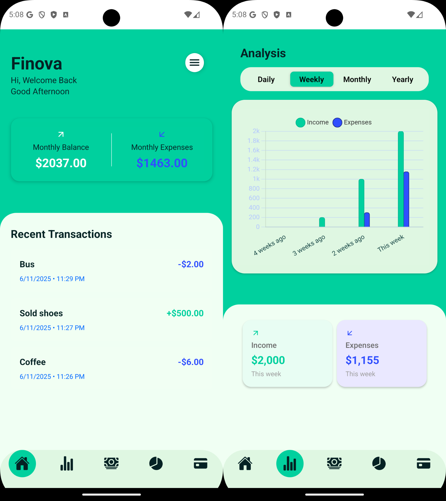
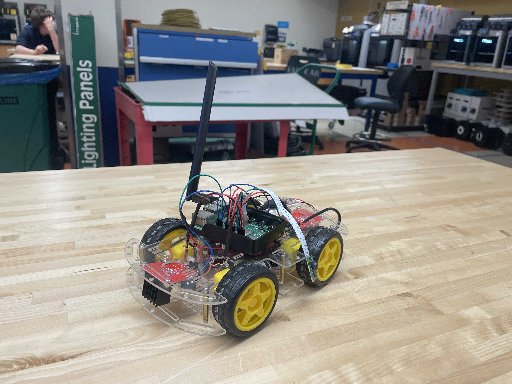
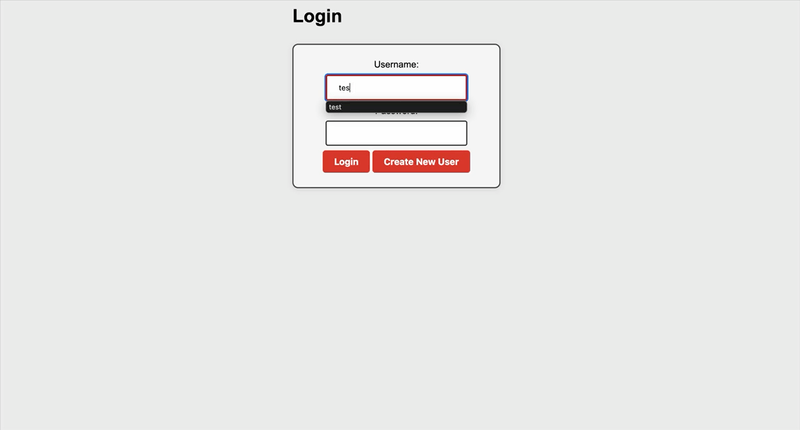
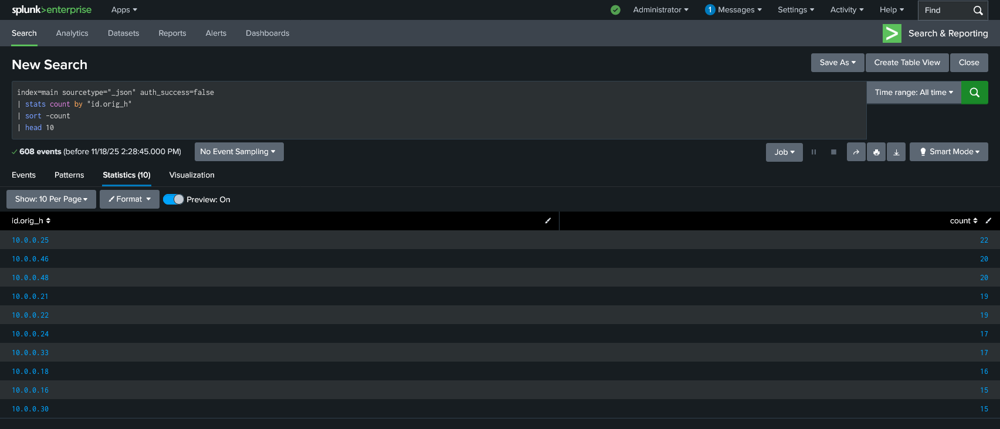
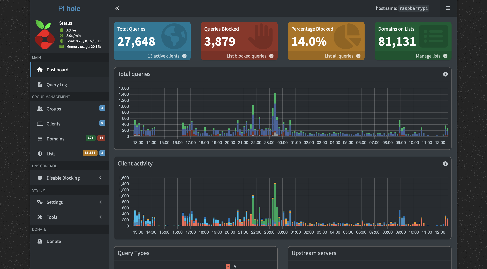
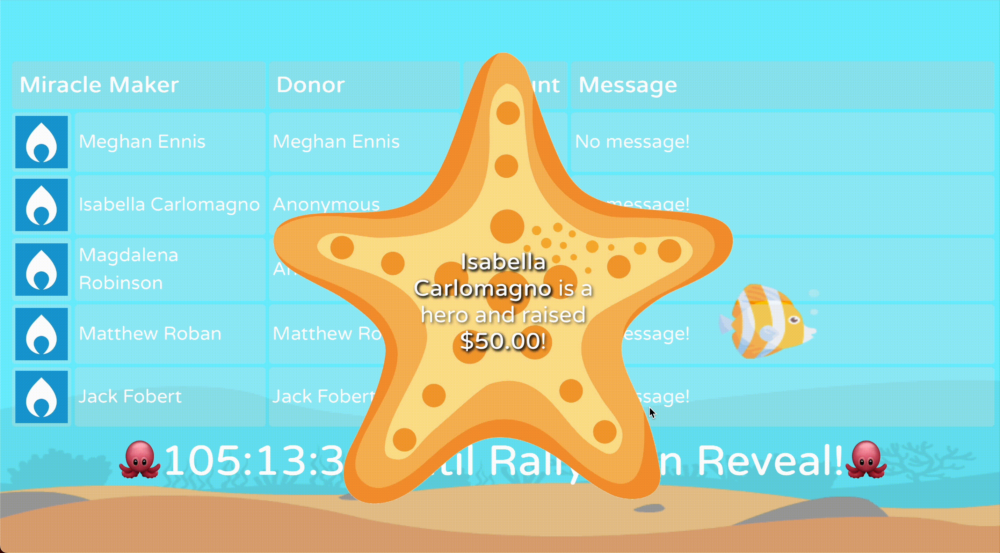
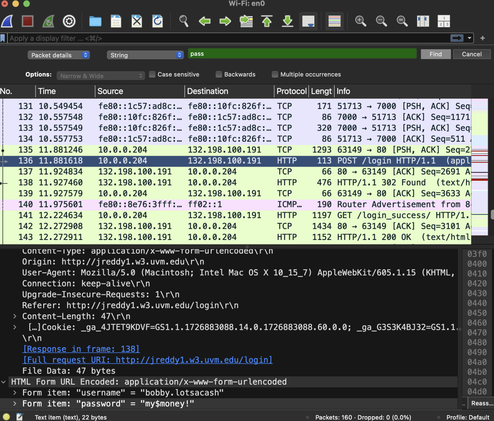

Developed a cross-platform financial tracking application as part of a collaborative group project,
using Scrum and Agile methodologies. The app helps users manage income, expenses, and budgets
through intuitive dashboards and real-time data insights. My contributions included designing core
features, integrating Firebase for secure data storage, and ensuring a clean, user-friendly
interface.


Collaborated in a team to design, build, and program a Raspberry Pi–powered remote-controlled car.
The car could be operated via computers and an Xbox controller, and included a mounted camera that
streamed a live video feed to our screens.

Password vault is a program that integrates C++ for encryption and Python + Flask for hashing, UI,
and API checks. Users can log in, store their credentials, encrypt and decrypt them, and check for
breaches through the Have I Been Pwned API. All encryption and decryption occur locally in C++ using
the Crypto++ library. Passwords are encrypted with AES-256-CBC, and a random initialization vector
(IV) is generated per entry. The vault stores Base64(IV + ciphertext) in CSV form. Decryption
reconstructs the plaintext using the stored IV and a key derived from the user’s master password via
PBKDF2-HMAC-SHA256 (100 000 iterations).

A multi-phase Splunk analysis project focused on real-world SOC workflows. I ingested and normalized
Zeek-style SSH and HTTP logs to detect brute-force attempts, unauthorized access patterns,
suspicious web activity, and anomalous authentication trends. Through custom SPL queries,
dashboards, and event-type correlation, I identified high-risk hosts, malicious user-agents, and
potential exfiltration attempts. This project demonstrates hands-on experience with SIEM operations,
log enrichment, and cyber threat investigation techniques used in modern blue-team environments.

Deployed Pi-hole on a Raspberry Pi as a network-wide DNS sinkhole to block ads, trackers,
and malicious domains across all devices on the home network. Configured the router to
distribute the Pi's IP as the primary DNS server via DHCP, ensuring automatic coverage
for every connected device without manual configuration. Monitored query traffic and
blocked domain statistics through Pi-hole's web dashboard. Currently expanding the project
with a self-hosted VPN to enable secure remote access to the admin panel.

A real-time donation tracking dashboard built for UVM Dance Marathon's "Rallython" fundraising event.
Developed with React and deployed via GitHub Pages, the dashboard features a custom under-the-sea
theme
with live donation totals, participant leaderboards, and animated milestone displays — keeping
energy
high and donors engaged throughout the event.

Conducted a simulated penetration test and social engineering attack as part of a cybersecurity
lab, taking on the role of an ethical hacker targeting a fictional real estate executive. Using
Wireshark on an unsecured public network, captured plaintext HTTP traffic to extract login
credentials in real time — then demonstrated how HTTPS encryption prevents the same attack.
Also simulated a phishing campaign using a forged bank login page to harvest credentials
server-side, illustrating how encryption alone doesn't stop a determined attacker. Documented
three actionable defenses: limiting social media exposure, recognizing phishing indicators,
and using a VPN on public networks.